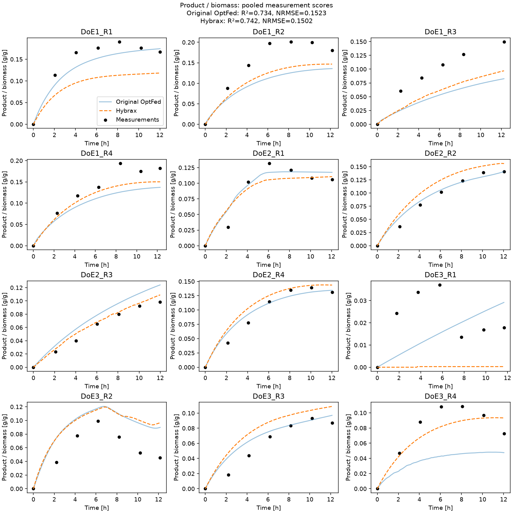
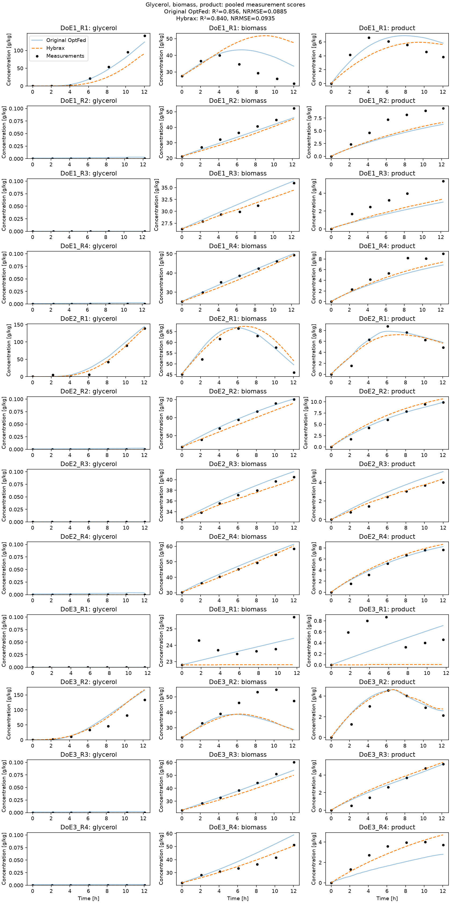

OptFed mechanistic model¶
Hybrax is designed primarily for hybrid models that combine mechanistic balances with learned rates. It also fits fully mechanistic models. Here we fit the 11-parameter reduced OptFed model directly to glycerol, biomass, and product concentrations, with no neural network and no intermediate rate estimation.
The kinetic structure follows Schlögl et al. 1. Uptake supplies maintenance, product formation, and growth. Temperature affects product formation through an Eyring rate law, and accumulated generations inhibit production. The yields and glycerol saturation constant remain fixed.
This example uses the twelve experimental fed-batch processes published with OptFed 2, originating from Kittler et al. 3. Nine are substrate-limited: when glycerol remains near zero, its mass balance determines uptake from the feed supply. OptFed’s authors likewise inferred uptake from the glycerol balance in their rate-fitting stage 1. We use that feed-implied uptake for these processes and fit kinetic uptake for the other three. The model fits all twelve processes jointly with one shared set of eleven parameters.
Load the published data¶
The bundled data.json
is a Hybrax BioProcessCollection. Training and docs
builds use this local file without downloading data. To regenerate it from the
four CSVs at a pinned OptFed commit, run:
uv run python examples/gallery_optfed/import_data.py
The importer maps
the published data as follows:
sampling_points.csvsupplies initial reactor mass and raw glycerol, total biomass, and product concentrations. Time zero is induction. As in OptFed’s fitting script, row 40 ofDoE1_R3is excluded as an erroneous measurement. Its withdrawal event remains in the mass balance.volume_flow_rates.csvsupplies cumulative carbon and base feeds. Each feed starts at zero added mass at induction. Downward reactor-mass jumps estimate individual withdrawals, including extra draws between concentration measurements.temperatures.csvsupplies the measured temperature control in Kelvin.c_feed.csvsupplies glycerol concentration in the carbon feed. The importer uses OptFed’s density correction to convert this value from g/L to g/kg.
OptFed uses a mass-based balance. Here volume stores reactor mass in kg,
feed amounts are in kg, and concentrations use g/kg. The reactor-density field
is set to 1 kg/L; it does not enter this mass-based calculation. Feed and
temperature traces use Hybrax’s default piecewise-linear interpolation. The
concentration targets remain the actual measurements, without spline smoothing.
collection = load_process_collection(WORK / "data.json")
summary = pd.DataFrame([
{
"Process": name,
"Measurements": len(
process.reactor_medium.components["biomass"].concentration.times
),
"Duration [h]": round(process.time_axis.end, 2),
"Max glycerol [g/kg]": float(
process.reactor_medium.components["glycerol"].concentration.values.max()
),
"Uptake": "Feed-implied" if process.process_variables[
"supply_limited_uptake"
].values.values[0] else "Kinetic",
}
for name, process in collection.processes.items()
])
display(summary)
print(f"{len(summary)} processes, {summary.Measurements.sum()} measurement rows")
| Process | Measurements | Duration [h] | Max glycerol [g/kg] | Uptake | |
|---|---|---|---|---|---|
| 0 | DoE1_R1 | 7 | 12.03 | 141.018953 | Kinetic |
| 1 | DoE1_R2 | 7 | 12.16 | 0.000000 | Feed-implied |
| 2 | DoE1_R3 | 6 | 12.25 | 0.000000 | Feed-implied |
| 3 | DoE1_R4 | 7 | 12.27 | 0.000000 | Feed-implied |
| 4 | DoE2_R1 | 7 | 12.04 | 139.032248 | Kinetic |
| 5 | DoE2_R2 | 7 | 12.03 | 0.000000 | Feed-implied |
| 6 | DoE2_R3 | 7 | 11.99 | 0.000000 | Feed-implied |
| 7 | DoE2_R4 | 7 | 12.02 | 0.000000 | Feed-implied |
| 8 | DoE3_R1 | 7 | 11.68 | 0.000000 | Feed-implied |
| 9 | DoE3_R2 | 7 | 12.15 | 133.782414 | Kinetic |
| 10 | DoE3_R3 | 7 | 12.14 | 0.000000 | Feed-implied |
| 11 | DoE3_R4 | 7 | 12.03 | 0.000000 | Feed-implied |
12 processes, 83 measurement rows
Define the rate laws¶
Measured biomass (X) includes intracellular product (P). The model uses (X-P) as active biomass, which drives uptake and production. Both concentrations are in g/kg. Hybrax adds the feed and sampling balances to these reaction terms:
reaction_ode=hxf.ReactionOde(
algebraic={"active_biomass": "biomass - product"},
rates={
name: (None, None)
for name in ("q_biomass", "q_glycerol", "q_product")
},
derivatives={
"biomass": "(q_biomass + q_product) * active_biomass",
"glycerol": "-q_glycerol * active_biomass",
"product": "q_product * active_biomass",
},
),
Write the mechanistic rates in custom.py. Parameters are fitted in unconstrained
space and mapped into physical bounds with a sigmoid. Positive parameters use
logarithmic bounds; the equilibrium temperature uses linear bounds.
BOUNDS = {
"uptake_max": ((1e-12, 1.0),), # g glycerol / (g active biomass h)
"glycerol_inhibition": ((1e-5, 1e4),), # g/kg
"maintenance": ((1e-12, 1.0),), # g glycerol / (g active biomass h)
"uptake_maintenance": ((1e-12, 1e6),), # g active biomass h / g glycerol
"product_maintenance": ((1e-12, 1e6),), # g total biomass / g product
"production_max": ((1e-12, 1e-5),), # g glycerol / g active biomass
"production_half_saturation": ((1e-12, 1e2),), # same units as uptake
"generation_inhibition": ((1e-12, 1e4),), # generations
"temperature": ((4e4, 1e5), (1e5, 1e7), (300.0, 315.0)), # J/mol, J/mol, K
}
Allocate glycerol uptake¶
The per-process flag supply_limited_uptake selects the uptake rule. It is stored
as a controlled process variable so Hybrax passes it to the reaction module.
The summary above shows the reason for the split: glycerol accumulates in
DoE1_R1, DoE2_R1, and DoE3_R2, whereas it stays near zero in the other nine.
For substrate-limited processes, the carbon-feed rate and composition arrive through Hybrax’s controls interface. Their product gives glycerol supplied per hour. Dividing by reactor mass and active biomass gives specific uptake:
[ g = \frac{F_C G_{\mathrm{feed}}}{V(X-P)}. ]
Here (F_C) is carbon-feed mass flow in kg/h, (G_{\mathrm{feed}}) is its
glycerol concentration in g/kg, and (V) is reactor mass in kg.
For the other processes, uptake follows
(g_{\max}G/(0.001+G)/(1+G/K_I)), where (G) is reactor glycerol in g/kg
and (K_I) is glycerol_inhibition in g/kg.
kinetic_uptake = p["uptake_max"][0]
kinetic_uptake *= glycerol / (K_GLYCEROL + glycerol)
kinetic_uptake *= _inhibition(glycerol, p["glycerol_inhibition"][0])
volume = self.unscale_modeled_V(inputs.SCL_modeled_V)
feed_rates = self.unscale_controlled_Inflows_rates(
inputs.SCL_controlled_Inflows_rates
)
feed_compositions = self.unscale_controlled_Inflows_Cin(
inputs.SCL_controlled_Inflows_Cin
)
glycerol_feed = jnp.sum(feed_rates * feed_compositions[:, self.i_glycerol])
supply_uptake = glycerol_feed / (volume * jnp.maximum(active_biomass, 1e-8))
uptake = jax.lax.cond(
controls[self.i_supply_limited] > 0.5,
lambda: supply_uptake,
lambda: kinetic_uptake,
)
Allocate maintenance¶
Maintenance increases with uptake and the product-to-biomass ratio. It cannot consume more glycerol than uptake supplies. Specific glycerol uptake and maintenance have units g glycerol per g active biomass per hour.
maintenance = p["maintenance"][0]
maintenance *= 1.0 + uptake * p["uptake_maintenance"][0]
maintenance *= 1.0 + product_biomass * p["product_maintenance"][0]
maintenance = jnp.minimum(maintenance, uptake)
Allocate production and growth¶
Product formation uses glycerol left after maintenance. Its production ceiling depends on temperature through the Eyring equation. The activation energy, inactivation enthalpy, equilibrium temperature, and prefactor are trainable.
def _temperature_ceiling(temperature, constant, parameters):
activation_energy, enthalpy, equilibrium_temperature = parameters
return (
constant
* K_B
* temperature
* jnp.exp(-activation_energy / (R * temperature))
/ (
H
* (
1.0
+ jnp.exp(
enthalpy * (1.0 / equilibrium_temperature - 1.0 / temperature) / R
)
)
)
* 3600.0
)
Temperature is in Kelvin, and both energies are in J/mol. The factor 3600
converts the Eyring rate from seconds to hours.
Uptake has two parameters, maintenance has three, and production has six,
for eleven trainable scalars in total. The initial production prefactor is small
enough to keep the rate below its substrate cap, where its parameters have
nonzero gradients.
Product formation saturates in the remaining uptake and decreases with accumulated generations. Its glycerol demand is capped by available uptake. The fixed yields convert the remaining glycerol allocations into active biomass and product formation rates.
available = jnp.maximum(uptake - maintenance, 0.0)
production = _temperature_ceiling(
temperature, p["production_max"][0], p["temperature"]
)
production *= available / (p["production_half_saturation"][0] + available)
production *= _inhibition(generations, p["generation_inhibition"][0])
production = jnp.minimum(production, available)
q_biomass = jnp.maximum(available - production, 0.0) * Y_XG
q_product = production * Y_PG
growth_rate = (q_biomass + q_product) * active_biomass / biomass
The generation count is a single latent state initialized at zero. Its derivative
is (\mu/\ln 2), where
(\mu=(q_{\mathrm{biomass}}+q_{\mathrm{product}})(X-P)/X) is the biological
specific growth rate of total biomass. Integrating growth keeps this count independent
of dilution and the volume removed during sampling. It has no extra fitted
parameters. Set allow_stateful_models to enable this latent state.
Prepare and fit concentrations¶
State and control scales come from the training data. State scaling also weights the default concentration loss, so glycerol does not dominate simply because its concentrations are larger than product concentrations.
SCALE_modeled_RMCs=jnp.asarray(
[
max(
np.abs(runtime_data.raw_state_trace(i, name)[1]).max()
for i in indices
)
for name in runtime_data.rhs_ode.name_modeled_RMCs
]
),
Use Adam for 500 epochs, with gradient clipping configured at 0.05 and a
warmup followed by cosine learning-rate decay, supplied by the
build_learning_rate hook in custom.py. The default loss compares
predicted concentrations with the supplied measurements. No rate targets are
constructed.
Each update uses one process in a fixed order. An epoch visits all twelve, so
500 epochs give 6,000 updates. Solver tolerances are rtol=1e-5 and atol=1e-7.
Allow tens of minutes for the full fit on CPU. The standalone runner below
streams training progress; this notebook prints the final status.
{
"data": {
"prepared": "prepared",
"targets": [
"biomass",
"glycerol",
"product"
],
"target_source": "reactor_components"
},
"custom_py": "custom.py",
"train": {
"epochs": 500,
"seed": 0,
"learning_rate": 0.01,
"grad_clip_norm": 0.05,
"allow_stateful_models": true,
"batch_size": 1,
"shuffle": false
},
"solver": {
"max_steps": 100000,
"rtol": 1e-05,
"atol": 1e-07
},
"checkpoint": {
"every": 0
},
"output": {
"dir": "run",
"predictions": "parents"
}
}
hxt_cli("prepare", "--config", "prepare-config.json",
"--output-dir", "prepared", "--overwrite")
output = hxt_cli("train", "--config", "train-config.json", "--overwrite")
print(next(line for line in output.splitlines() if "training complete" in line))
print("Run directory: docs/source/_data/out/runs/gallery_optfed/run/")
INFO __main__: training complete: first_mean_loss=0.0791738 last_mean_loss=0.00140788 delta=-0.0777659
Run directory: docs/source/_data/out/runs/gallery_optfed/run/
predictions = pd.read_csv(WORK / "run/predictions.csv")
original = pd.read_csv(WORK / "original_predictions.csv")
points = sampling_predictions(collection, predictions)
for name, value in scores(points).items():
print(f"{name:10s} R2 = {value:.4f}")
model, _ = model_load(WORK / "run")
biomass R2 = 0.7306
glycerol R2 = 0.8885
product R2 = 0.8533
P_X R2 = 0.7416
The table below shows the fitted values and their bounds. In the units, (G) denotes glycerol, (A) active biomass, and (P) product.
units = {
"uptake_max": ["g_G/(g_A h)"],
"glycerol_inhibition": ["g/kg"],
"maintenance": ["g_G/(g_A h)"],
"uptake_maintenance": ["g_A h/g_G"],
"product_maintenance": ["g biomass/g_P"],
"production_max": ["g_G/g_A"],
"production_half_saturation": ["g_G/(g_A h)"],
"generation_inhibition": ["generations"],
"temperature": ["J/mol", "J/mol", "K"],
}
temperature_names = [
"activation_energy", "inactivation_enthalpy", "equilibrium_temperature"
]
rows = []
for name, values in model.reaction_module.parameters.items():
for i, (value, bounds, unit) in enumerate(zip(values, BOUNDS[name], units[name])):
rows.append({
"Parameter": temperature_names[i] if name == "temperature" else name,
"Unit": unit, "Lower": bounds[0],
"Fitted": float(value), "Upper": bounds[1],
})
display(pd.DataFrame(rows))
| Parameter | Unit | Lower | Fitted | Upper | |
|---|---|---|---|---|---|
| 0 | uptake_max | g_G/(g_A h) | 1.000000e-12 | 5.003575e-01 | 1.000000e+00 |
| 1 | glycerol_inhibition | g/kg | 1.000000e-05 | 1.029247e+02 | 1.000000e+04 |
| 2 | maintenance | g_G/(g_A h) | 1.000000e-12 | 6.531107e-03 | 1.000000e+00 |
| 3 | uptake_maintenance | g_A h/g_G | 1.000000e-12 | 5.593578e+01 | 1.000000e+06 |
| 4 | product_maintenance | g biomass/g_P | 1.000000e-12 | 2.383569e+00 | 1.000000e+06 |
| 5 | production_max | g_G/g_A | 1.000000e-12 | 2.203618e-09 | 1.000000e-05 |
| 6 | production_half_saturation | g_G/(g_A h) | 1.000000e-12 | 1.746170e-01 | 1.000000e+02 |
| 7 | generation_inhibition | generations | 1.000000e-12 | 1.030740e+00 | 1.000000e+04 |
| 8 | activation_energy | J/mol | 4.000000e+04 | 4.990425e+04 | 1.000000e+05 |
| 9 | inactivation_enthalpy | J/mol | 1.000000e+05 | 5.592124e+05 | 1.000000e+07 |
| 10 | equilibrium_temperature | K | 3.000000e+02 | 3.094612e+02 | 3.150000e+02 |
Inspect the fitted trajectories¶
The following plots compare the fitted Hybrax model, the original OptFed model,
and the experimental measurements. Original OptFed curves are semi-transparent
solid lines; Hybrax curves are dashed. The original curves come from the authors’
global reduced-model fit to derived rates, exported from their saved predictions.
The bundled reference curves and
measurement-time predictions let this
comparison run without downloading or refitting OptFed. Hybrax fits
concentrations directly.
The reported scores describe the same processes used for training, so they
measure goodness of fit rather than performance on unseen processes.
fig, axes = plt.subplots(4, 3, figsize=(12, 12), layout="constrained")
for ax, (name, observed) in zip(axes.flat, points.groupby("process", sort=False)):
trajectory = predictions[predictions.process == name]
reference = original[(original.process == name) & (
original.t <= collection.processes[name].time_axis.end
)]
ax.plot(reference.t, reference.P / reference.X,
color="tab:blue", alpha=0.45, label="Original OptFed")
ax.plot(trajectory.t, trajectory.c_product / trajectory.c_biomass,
color="tab:orange", linestyle="--", label="Hybrax")
ax.scatter(observed.t, observed.P_X, color="black", s=20,
label="Measurements")
ax.set(title=name, xlabel="Time [h]", ylabel="Product / biomass [g/g]")
axes.flat[0].legend()
fig.suptitle(
"Product / biomass: pooled measurement scores\n"
+ "\n".join(
f"{name}: R²={row['P/X R²']:.3f}, NRMSE={row['P/X NRMSE']:.4f}"
for name, row in comparison.iterrows()
),
fontsize=11,
)
fig.savefig(WORK / "run/PX_fit.png", dpi=140)
plt.close(fig)
display(Image(filename=str(WORK / "run/PX_fit.png")))

Inspect the three fitted concentrations as well. A similar product-to-biomass ratio can conceal different biomass and product predictions.
fig, axes = plt.subplots(12, 3, figsize=(12, 24), layout="constrained")
for row, (name, observed) in zip(axes, points.groupby("process", sort=False)):
trajectory = predictions[predictions.process == name]
reference = original[(original.process == name) & (
original.t <= collection.processes[name].time_axis.end
)]
for ax, species, field in zip(
row, ("glycerol", "biomass", "product"), ("G", "X", "P")
):
ax.plot(reference.t, reference[field], color="tab:blue", alpha=0.45,
label="Original OptFed")
ax.plot(trajectory.t, trajectory[f"c_{species}"], color="tab:orange",
linestyle="--", label="Hybrax")
ax.scatter(observed.t, observed[species], color="black", s=15,
label="Measurements")
ax.set(title=f"{name}: {species}", ylabel="Concentration [g/kg]")
if species == "glycerol":
# Keep solver roundoff around zero from filling the panel.
upper = max(observed[species].max(), trajectory.c_glycerol.max(),
reference.G.max(), 0.1)
ax.set_ylim(0, 1.05 * upper)
for ax in axes[-1]:
ax.set_xlabel("Time [h]")
axes[0, 0].legend()
fig.suptitle(
"Glycerol, biomass, product: pooled measurement scores\n"
+ "\n".join(
f"{name}: R²={row['Total R²']:.3f}, NRMSE={row['Total NRMSE']:.4f}"
for name, row in comparison.iterrows()
),
fontsize=11,
)
fig.savefig(WORK / "run/concentration_fit.png", dpi=140)
plt.close(fig)
display(Image(filename=str(WORK / "run/concentration_fit.png")))

Compare fitting objectives¶
Direct concentration fitting of these experimental measurements can achieve aggregate fit quality comparable to the original OptFed results, while yielding different parameter estimates and trajectories. Similar goodness of fit therefore does not guarantee recovery of the original parameters. This suggests weak parameter identifiability, but does not establish it: OptFed fitted derived rates, and some uptake assumptions also differ. This comparison uses the same measured processes, with different fitting objectives. The following comparison uses all 83 retained measurement rows, including the initial conditions. Combined NRMSE is the root mean squared error across all 249 concentration values, after dividing each species by its maximum observed concentration across the twelve processes. Total R² uses the same scaled concentrations, with each species centered on its own mean. P/X NRMSE divides ratio residuals by the maximum observed P/X. Both models use the same scales. These metrics differ from the optimizer’s training loss.
display(comparison)
| Total R² | Total NRMSE | P/X R² | P/X NRMSE | |
|---|---|---|---|---|
| Model | ||||
| Original OptFed | 0.856371 | 0.088486 | 0.734308 | 0.152348 |
| Hybrax | 0.839740 | 0.093469 | 0.741617 | 0.150238 |
Hybrax’s combined NRMSE is about 6% higher: 0.0935 versus 0.0885. Its pooled product-to-biomass (R^2) is 0.742 versus 0.734. These scores describe comparable aggregate agreement with measurements, despite the differences in individual trajectories. They are our measurement-based comparison, not quoted cross-validation scores from the paper. The reference scores use the authors’ saved predictions at the exact measurement times, rather than interpolation from the plotted curves.
In the nine feed-implied processes, uptake balances glycerol feed by construction.
Their predicted glycerol therefore only dilutes from its initial value. Glycerol
fit quality in these processes does not validate uptake kinetics. Only the three
kinetic processes inform uptake_max and glycerol_inhibition.
The Eyring prefactor and activation energy can also compensate for each other
over a narrow temperature range. A good fit does not establish unique parameters.
Gotchas¶
Temperature must be in Kelvin. The published temperature trace uses Kelvin.
Feed-implied uptake assumes negligible glycerol accumulation. Set
supply_limited_uptakeonly for processes where this assumption is appropriate.
Run the example locally¶
From the repository root, run:
uv run python examples/gallery_optfed/run.py
The standalone run writes to examples/gallery_optfed/run/. This page’s
executed run is in docs/source/_data/out/runs/gallery_optfed/run/.
Regenerate the bundled dataset with
uv run python examples/gallery_optfed/import_data.py. This step downloads the
four published CSVs; fitting the bundled dataset does not need network access.
See Mechanistic models for a smaller rate law and
The reaction module for the RateModule interface.
References¶
Schlögl, G., Lück, R., Kittler, S., Spadiut, O., Kopp, J., Zanghellini, J., & Gotsmy, M. (2024). Optimizing bioprocessing efficiency with OptFed: Dynamic nonlinear modeling improves product-to-biomass yield. Computational and Structural Biotechnology Journal, 23, 3651-3661. doi:10.1016/j.csbj.2024.09.024
Kittler et al. (2022). Recombinant protein L: production, purification and characterization of a universal binding ligand. Journal of Biotechnology, 359, 108-115. doi:10.1016/j.jbiotec.2022.10.002